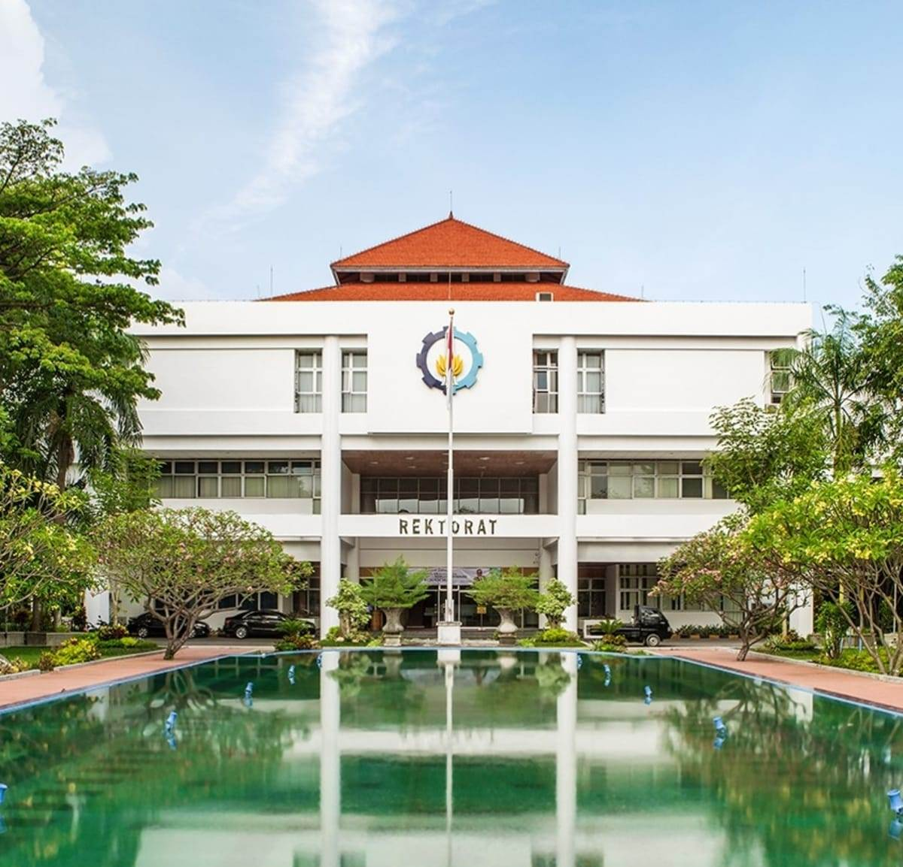
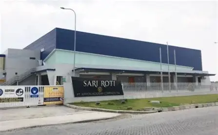
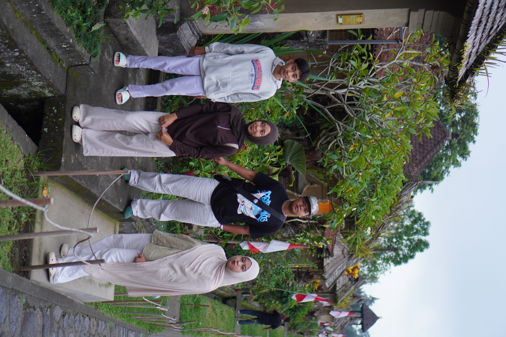

03 / NATURE
Bedugul
Pengamatan potensi alam dan lingkungan wisata.
EDUCATIONAL JOURNEY 2026
Dokumentasi perjalanan Study Tour SMAMDELA 2026. Menjelajahi dunia pendidikan, industri, alam, sejarah, dan budaya.
Mulai Jelajahi ↗
9–13 November 2026
OUR JOURNEY
Study Tour merupakan kegiatan pembelajaran di luar kelas yang memberikan pengalaman secara langsung melalui kunjungan ke perguruan tinggi, industri, serta destinasi alam dan budaya.
PART 01 — SURABAYA
Mengenal dunia perguruan tinggi, perkembangan ilmu pengetahuan, dan teknologi.

Institut Teknologi Sepuluh Nopember merupakan perguruan tinggi yang menjadi salah satu tujuan kunjungan edukatif kelompok kami. Dalam kegiatan ini, pengamatan diarahkan pada lingkungan pendidikan tinggi, bidang keilmuan, fasilitas atau inovasi yang diperkenalkan, serta kontribusi perguruan tinggi terhadap pengembangan ilmu pengetahuan dan teknologi. Dalam kegiatan study tour, rombongan kami mengunjungi Teater B Institut Teknologi Sepuluh Nopember (ITS). Pada kunjungan tersebut, kami mendapatkan penjelasan mengenai Fakultas Vokasi ITS, mulai dari sejarah awal berdirinya, perkembangan, hingga berbagai prestasi yang telah diraih. Selain itu, kami juga memperoleh informasi mengenai para lulusan Fakultas Vokasi ITS yang telah berhasil berkontribusi di masyarakat. Salah satu contohnya adalah Bapak Eri Cahyadi, yang merupakan Wali Kota Surabaya saat ini. Kunjungan ini memberikan wawasan kepada kami mengenai perkembangan pendidikan vokasi serta peran lulusannya dalam dunia kerja dan pemerintahan
INDUSTRIAL VISIT

PT Nippon Indosari Corpindo merupakan perusahaan yang bergerak Institut Teknologi Sepuluh Nopember merupakan perguruan tinggi yang menjadi salah satu tujuan kunjungan edukatif kelompok kami. Dalam kegiatan ini, pengamatan diarahkan pada lingkungan pendidikan tinggi, bidang keilmuan, fasilitas atau inovasi yang diperkenalkan, serta kontribusi perguruan tinggi terhadap pengembangan ilmu pengetahuan dan teknologi. Dalam kegiatan study tour, rombongan kami mengunjungi Teater B Institut Teknologi Sepuluh Nopember (ITS). Pada kunjungan tersebut, kami mendapatkan penjelasan mengenai Fakultas Vokasi ITS, mulai dari sejarah awal berdirinya, perkembangan, hingga berbagai prestasi yang telah diraih. Selain itu, kami juga memperoleh informasi mengenai para lulusan Fakultas Vokasi ITS yang telah berhasil berkontribusi di masyarakat. Salah satu contohnya adalah Bapak Eri Cahyadi, yang merupakan Wali Kota Surabaya saat ini. Kunjungan ini memberikan wawasan kepada kami mengenai perkembangan pendidikan vokasi serta peran lulusannya dalam dunia kerja dan pemerintahan dalam industri produk roti. Kunjungan ini menjadi kesempatan untuk mempelajari industri pangan, mulai dari pengenalan produk, tahapan produksi yang diizinkan untuk diamati, penerapan teknologi, pengendalian mutu, tenaga kerja, hingga distribusi produk. Dalam kunjungan berikutnya, rombongan kami berkesempatan mengunjungi pabrik Sari Roti yang berada di Pasuruan. Kegiatan diawali dengan mengunjungi galeri untuk melihat dan mempelajari proses produksi roti, mulai dari pengolahan bahan baku, pembuatan adonan, hingga menjadi produk roti yang siap dikemas dan didistribusikan. Kami juga mendapatkan penjelasan bahwa setiap varian roti memiliki proses dan cara produksi yang berbeda sesuai dengan jenis produknya. Melalui kunjungan ini, kami memperoleh pengetahuan mengenai proses produksi dalam industri pangan, penggunaan bahan baku, serta tahapan pengolahan makanan dalam skala pabrik.
PART 02 — BALI
Menjelajahi keindahan alam, warisan sejarah, dan kekayaan budaya Bali.
Pengamatan potensi alam dan lingkungan wisata.

Pelestarian tradisi, lingkungan, dan kearifan lokal.

Potensi wisata alam dan ekonomi masyarakat.

Karya monumental dan pertunjukan budaya.

Mengenal sejarah perjuangan rakyat Bali.

Warisan budaya dan lingkungan pesisir.
OUR ANALYSIS
Menghubungkan pengalaman Study Tour dengan pembelajaran di sekolah. Pilih mata pelajaran untuk melihat hasil analisis.
Jenis sampah, karakteristik bahan, dan pengelolaannya.
Keanekaragaman hayati dan keseimbangan ekosistem.
Perkembangan masyarakat dan pelestarian budaya.
Asking and giving opinion tentang lingkungan.
Pariwisata berkelanjutan harus mampu menjaga keseimbangan antara perkembangan ekonomi, kelestarian lingkungan, dan keberlanjutan budaya.
VIDEO DOCUMENTATION
Saksikan dokumentasi perjalanan Study Tour SMAMDELA 2026 melalui video berikut.
Dokumentasi perjalanan, pengalaman, dan momen selama kegiatan Study Tour.
FINAL THOUGHTS
Berdasarkan kegiatan Study Tour ke Garuda Wisnu Kencana (GWK), kelompok kami memperoleh banyak pengalaman dan pengetahuan baru, khususnya mengenai pentingnya menjaga serta melestarikan kebudayaan Indonesia. Kunjungan ini memberikan kesempatan kepada kami untuk mengenal salah satu karya seni monumental yang menjadi kebanggaan bangsa. Melalui pengamatan terhadap patung Garuda Wisnu Kencana dari kejauhan, kami memahami bahwa sebuah karya seni tidak hanya memiliki nilai keindahan, tetapi juga mengandung makna filosofis, sejarah, dan identitas budaya. Pengalaman menyaksikan pertunjukan Tari Kecak secara langsung juga memberikan kesan tersendiri bagi kelompok kami. Kami dapat melihat bagaimana kesenian tradisional tetap diperkenalkan kepada masyarakat melalui pertunjukan yang menarik dan memiliki ciri khas tersendiri. Hal tersebut menyadarkan kami bahwa kebudayaan merupakan warisan yang harus dijaga agar tidak hilang akibat perkembangan zaman. Sebagai generasi muda, kami memiliki tanggung jawab untuk mengenal, menghargai, dan ikut melestarikan kebudayaan Indonesia. Melalui pembelajaran Sejarah, kami memperoleh pemahaman mengenai perkembangan pembangunan patung GWK serta nilai sejarah yang terkandung di dalamnya. Kami belajar bahwa sebuah karya monumental membutuhkan proses panjang, kreativitas, dan kerja sama dari berbagai pihak. Dari pembelajaran Biologi, kami memahami pentingnya menjaga keseimbangan ekosistem serta memperhatikan hubungan antara makhluk hidup dan lingkungan. Sementara itu, melalui Kimia, kami mengetahui bahwa kegiatan pariwisata dapat menghasilkan berbagai jenis sampah yang memerlukan pengelolaan secara tepat agar tidak menimbulkan pencemaran lingkungan. Kami juga memperoleh wawasan mengenai hubungan pariwisata dengan kegiatan ekonomi masyarakat. Hal tersebut terlihat dari keberadaan berbagai tempat usaha, seperti rumah makan, minimarket, dan outlet minuman di sepanjang perjalanan menuju GWK. Keberadaan usaha tersebut menunjukkan bahwa sektor pariwisata dapat membuka peluang usaha dan mendukung aktivitas ekonomi di sekitar kawasan wisata. Melalui pembelajaran Bahasa Inggris, kami juga berlatih menyampaikan pendapat mengenai pentingnya mempertahankan kebudayaan tradisional sebagai bagian dari identitas bangsa. Kegiatan ini memberikan pelajaran bahwa berwisata bukan hanya sekadar mengunjungi tempat menarik atau menikmati pertunjukan, tetapi juga merupakan kesempatan untuk memperoleh pengetahuan dan pengalaman secara langsung. Kami menyadari bahwa kemajuan pariwisata perlu disertai dengan kesadaran untuk menjaga kebudayaan dan lingkungan. Oleh karena itu, kami berharap pengalaman selama Study Tour ini dapat menjadi motivasi untuk lebih menghargai warisan budaya Indonesia serta menerapkan sikap peduli terhadap lingkungan dalam kehidupan sehari-hari.
MEMORIES
Galeri foto kegiatan Study Tour SMAMDELA 2026. Klik foto untuk melihat dokumentasi lebih jelas.
Kegiatan kunjungan dan pengenalan lingkungan kampus ITS.


Kegiatan kunjungan industri dan pengamatan proses produksi.


Dokumentasi perjalanan dan pengamatan lingkungan di kawasan Bedugul.


Dokumentasi suasana desa, budaya, dan kehidupan masyarakat setempat.


Dokumentasi keindahan alam dan kegiatan selama berada di Pantai Pandawa.


Dokumentasi kunjungan ke kawasan GWK dan pertunjukan Tari Kecak.


Dokumentasi kunjungan dan pengamatan sejarah perjuangan rakyat Bali.


Dokumentasi keindahan alam dan kawasan wisata Tanah Lot.